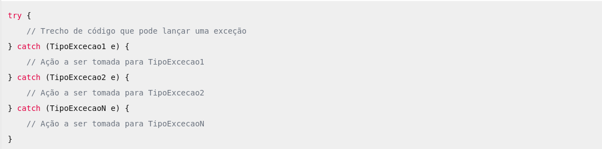
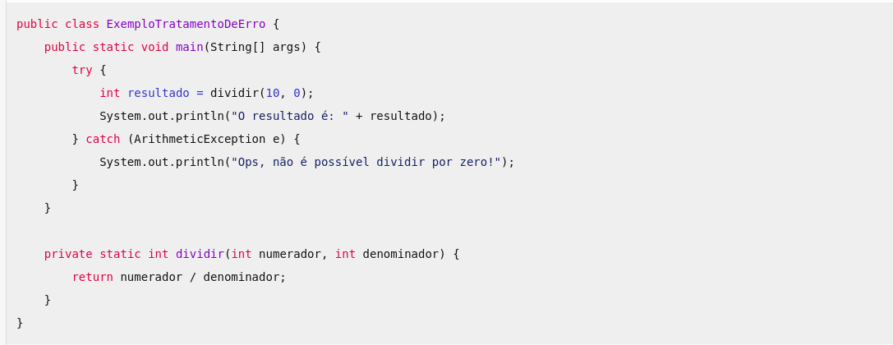

Tratamento de erros em linguagem de programação Java.
Tratamento de erros

Desenvolvedor Java Sênior na Develcode
28 de abril de 2024
O conhecimento sobre o tratamento de erros em linguagens de programação é essencial para o desenvolvimento de software robusto e confiável. Aqui estão alguns motivos pelos quais entender e aplicar técnicas de tratamento de erros é crucial:
1. Garantia de Qualidade e Segurança: O tratamento adequado de exceções e erros ajuda a garantir que o programa funcione conforme o esperado e evita comportamentos inesperados. Isso é especialmente importante em ambientes de produção, onde falhas podem ter consequências graves.
2. Identificação e Correção Rápida: O tratamento de erros permite identificar problemas rapidamente. Quando ocorre uma exceção, o código pode ser projetado para fornecer informações detalhadas sobre o erro, facilitando a correção.
3. Manutenção Simplificada: Código bem tratado é mais fácil de manter. Quando exceções são capturadas e tratadas adequadamente, a manutenção e a depuração se tornam mais eficientes.
4. Boas Práticas de Programação: O tratamento de erros é uma prática recomendada. Desenvolvedores experientes valorizam a integridade do código e a experiência do usuário, e o tratamento de exceções faz parte disso.
5. Comunicação com o Usuário: Tratamento de erros bem projetado inclui mensagens de erro claras e informativas para os usuários. Isso melhora a experiência do usuário e ajuda a resolver problemas de forma mais eficaz.
Saiba que o objetivo do tratamento de erro em um código de programação é lidar com situações inesperadas ou excepcionais que podem ocorrer durante a execução do programa. Quando um erro ocorre, o tratamento de erro permite que o programa tome medidas apropriadas em vez de simplesmente falhar. Isso pode incluir exibir mensagens de erro para o usuário, registrar informações relevantes para depuração ou até mesmo tentar corrigir o erro automaticamente. O tratamento de erro é fundamental para garantir que os programas sejam robustos e capazes de lidar com uma variedade de cenários, melhorando a experiência do usuário e a confiabilidade do software.
Curiosamente, para a linguagem de programação Java, o tratamento de exceções é uma habilidade fundamental para programadores, permitindo lidar com situações imprevistas de forma controlada. Alguns conceitos básicos necessários para o tratamento de exceções em Java:
1. Exceções em Java:
- Exceções ocorrem quando algo imprevisto acontece durante a execução de um programa.
- Elas podem ser provenientes de erros de lógica ou acesso a recursos que talvez não estejam disponíveis.
- Exemplos de motivos externos para exceções incluem tentar abrir um arquivo inexistente, consultar um banco de dados indisponível ou conectar-se a um servidor inexistente.
- Erros de lógica podem ocorrer ao manipular objetos nulos, dividir por zero ou usar tipos de dados incorretamente.
2. Blocos try-catch:
- O tratamento de exceções em Java envolve os blocos try e catch.
- A sintaxe básica é a seguinte:

Exemplo de trecho para o tratamento de erro em linguagem de programação Java.
- No bloco try, colocamos o código que pode lançar uma exceção.
- Nos blocos catch, descrevemos a ação a ser tomada quando a exceção é capturada.
3. Exemplo Prático:
- Suponha que temos uma classe com um método principal main que apresente um método de divisão com passagem de parâmetros.
- Se o resultado for um valor tendendo para o infinito, no caso de uma divisão com o valor do denominador tendendo para o número zero, ocorrerá uma exceção de ArithmeticException.
- Vejamos como ficaria o código com e sem o uso do try-catch:

Um exemplo de classe Java para o tratamento de erro.
4. Benefícios do Tratamento de Exceções:
- Garante a integridade do programa.
- Facilita a identificação e correção de problemas.
- Melhora a manutenção do código.
- Fornece mensagens de erro claras para os usuários.
O tratamento de exceções em Java é essencial para criar programas confiáveis e previsíveis. É uma prática recomendada que todo desenvolvedor deve dominar desde o início.
Para você melhorar o conhecimento e a importância do bom planejamento do tratamento de erros em um código de programação, é essencial adotar as algumas boas práticas:
1. Estudo e Conscientização: Os desenvolvedores devem se dedicar a aprender sobre os diferentes tipos de erros que podem ocorrer em seus programas. Isso inclui entender exceções, erros de sintaxe, erros lógicos e outros cenários inesperados. A conscientização sobre a importância do tratamento de erros deve ser promovida em equipes de desenvolvimento e em cursos de programação.
2. Documentação e Padrões: Criar documentação clara e concisa sobre como lidar com erros específicos é fundamental. Isso pode incluir exemplos de código, explicações detalhadas e diretrizes para tratamento de erros. Além disso, seguir padrões de codificação que incluam boas práticas de tratamento de erros ajuda a manter a consistência e a qualidade do código.
3. Testes e Simulações: Realizar testes rigorosos para verificar como o código se comporta em diferentes situações de erro é crucial. Isso envolve testes unitários, testes de integração e simulações de cenários de falha. Quanto mais cenários forem cobertos, melhor será o planejamento do tratamento de erros.
4. Feedback e Aprendizado Contínuo: Encorajar uma cultura de feedback entre os desenvolvedores é importante. Revisões de código, discussões sobre erros encontrados e compartilhamento de experiências contribuem para o aprendizado contínuo. Aprender com erros anteriores e aplicar esse conhecimento em projetos futuros é fundamental.
5. Ferramentas e Bibliotecas: Utilizar bibliotecas e ferramentas específicas para tratamento de erros pode simplificar o processo. Frameworks modernos oferecem recursos robustos para lidar com exceções e erros. Conhecer e aproveitar essas ferramentas economiza tempo e melhora a eficiência.
Em resumo, o bom planejamento do tratamento de erros não apenas evita falhas inesperadas, mas também contribui para a confiabilidade, redução do tempo de manutenção e qualidade geral do software.